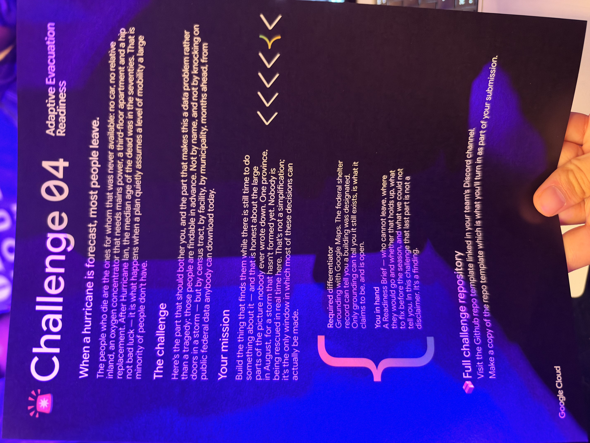

01 · SPOT
Find priority zones
Make vulnerability visible before the forecast.
After a disaster, people come together. The plan should make that care count before the storm arrives.
The median age of people who died after Hurricane Ian was in the seventies.
That number should move us from sympathy to preparation.

Resources are scarce, and a plan that assumes a car, a current shelter list, or a perfect phone call quietly leaves people out.
Make vulnerability visible before the forecast.
Bring the peer program to places people already use.
Give residents a person, not only a route.
Feed community knowledge back into readiness.
The planner does not replace the community. The planner helps the community find where it can matter most.
FEMA’s file tells us a building was designated. It does not tell us that the building is open today.
The next step is not another dashboard. It is a small group of trusted people in every priority area, ready to recruit peers and close the gaps the data cannot.
No One Left Behind · prevention · planning · partnering